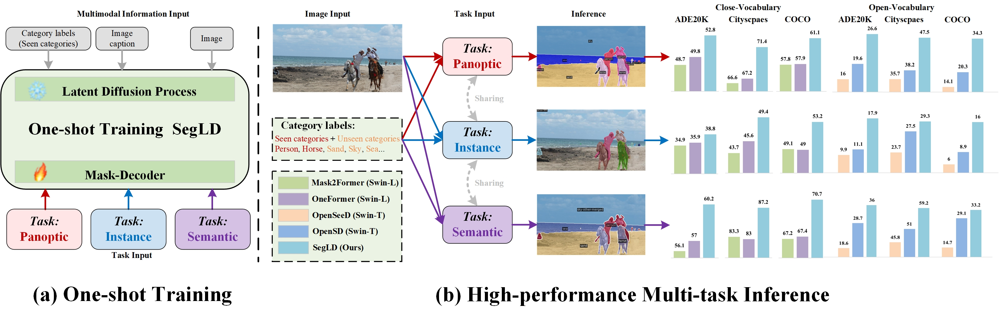

Pipeline of SegLD Training Process.

Pipeline of Mask-Decoder Training Process.


Open-vocabulary learning can identify categories marked during training (seen categories) and generalize to categories not annotated in the training set (unseen categories). It could theoretically extend segmentation systems to more universal applications. However, current open-vocabulary segmentation frameworks are primarily suited for specific tasks or require retraining according to the task, and they significantly underperform in inferring seen categories compared to fully supervised frameworks. Therefore, we introduce a universal open-vocabulary segmentation framework based on the latent diffusion process (\textbf{SegLD}), which requires only a single training session on a panoptic dataset to achieve inference across all open-vocabulary segmentation tasks, and reaches SOTA segmentation performance for both seen and unseen categories in every task. Specifically, SegLD comprises two stages: in the first stage, we deploy two parallel latent diffusion processes to deeply fuse the text (image caption or category labels) and image information, further aggregating the multi-scale features output from both latent diffusion processes on a scale basis. In the second stage, we introduce text queries, text list queries, and task queries, facilitating the learning of inter-category and inter-task differences through the computation of contrastive losses between them. Text queries are then further fed into a Transformer Decoder to obtain category-agnostic segmentation masks. Then we establish classification loss functions for the type of text input during training, whether image captions or category labels, to help assign a category label from the open vocabulary to each predicted binary mask. Experimental results show that, with just a single training session, SegLD significantly outperforms other contemporary SOTA fully supervised segmentation frameworks and open-vocabulary segmentation frameworks across all evaluation metrics for both known and unknown categories on the ADE20K, Cityscapes, and COCO datasets. This highlights SegLD's capability as a universal segmentation framework, with the potential to replace other segmentation frameworks and adapt to various segmentation domains.


Due to some of our code being based on internal infrastructure and being used for an upcoming unpublished work, it may take some time before the complete code can be released. We sincerely apologize for any inconvenience this may cause. The code will be made available once it is ready.
@article{zheng2024segld,
title={SegLD: Achieving universal, zero-shot and open-vocabulary segmentation through multimodal fusion via latent diffusion processes},
author={Zheng, Hongtao and Ding, Yifei and Wang, Zilong and Huang, Xinyan},
journal={Information Fusion},
pages={102509},
year={2024},
publisher={Elsevier}
}